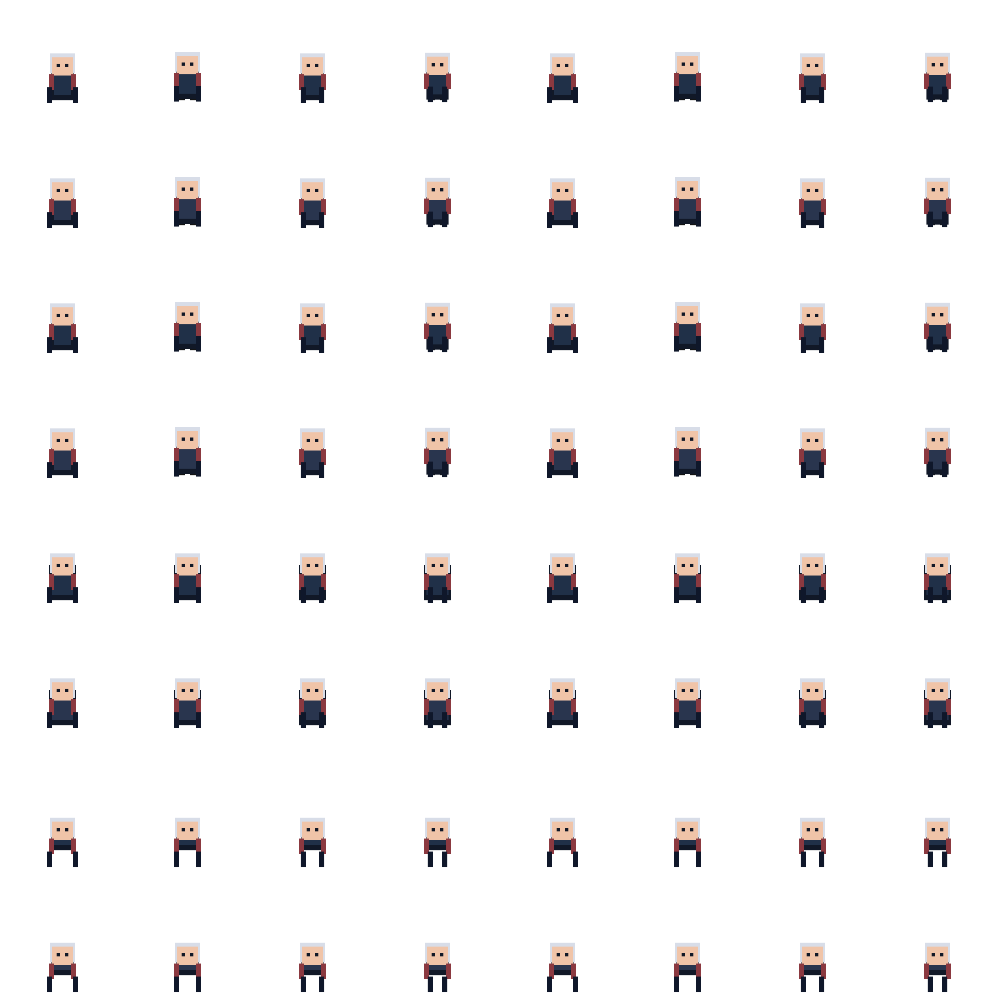

Local pixel workflow · v0.6.0
Pixel character packs, on your machine.
Prepare top-down pixel characters, edit sprite canvases, and write files other game tools can read. Studio is the default app. VNext is the opt-in workspace for v1 projects.
Run it locally Source repository v0.6.0 release
How it runs. This is a source-only preview. The website does not provide user file upload or cloud processing. It does not accept files and does not call models.

01 — Workspace
VNext workspace and text assistants
VNext is the opt-in workspace for v1 projects. Studio stays the default entry, and the local server opens Character Studio first.
Built-in text assistants — Codex, Grok, and Antigravity — discuss the open project or apply one creative action, with undo. Native installs and account login stay on your machine. They are not bundled here.

02 — Canvas
Native pixel tools
Draw on the canvas without a provider. v0.6.0 includes brushes, fill, eraser, color controls, onion skin, a project palette, timeline structure, and document export.
Linked cels
A change to a shared cel updates every frame that uses it. A provider-free pixel-tools CLI draws on a local candidate. You confirm the save.
Selection, text, display, PNG
Select pixels, edit canvas text, and set display options in the workspace. Download the displayed frame as a PNG at its original pixel size.
History storage
The open project keeps a small current state. Full edit history stays on disk, so longer sessions still save. Undo and redo stay the same. There is no full-history download and no new history UI.
Astra animation
With an explicit skill, Astra draws distinct frames and timings on the selected canvas and applies them as one undoable change.
03 — Studio
Studio stays the default
The rail is Character, Extract, Sequence, Map, Project, Self-check, and Settings. Extract opens Frame Extraction. Map opens Map Studio. The Scene item is hidden, and #scene opens Map Studio.
v0.6.0 retired Studio character compatibility generation. Reviewed generation and advanced local processing stay. Each module has one primary action.
- Character Import a local sprite sheet and run the character pack workflow.
- Extract Frame Extraction reads local media and previews frames.
- Sequence Sequence Studio imports local frames and sorts them by filename.
- Map Map Studio turns terrain material into an editable map. Tile structure comes from local rules.
- Project Project Pack combines existing character and scene artifact directories into
project_pack.zip. - Self-check and Settings Self-check is the QA module. Settings holds local options, including provider routing when you choose one.


04 — Exports
Files the local app writes
Exporters sit on the normalized character sheet. The scene tile path writes its own pack.
- Godot NPC JSON
godot_npc_pack.zipincludesAI资源库/一图全动作/<character_id>/npc.json,sprite.png, andthumb.png. The NPC document usesschemaVersion1. - RPG Maker
rpgmaker_pack.zipuses a 144×192 sheet, 3 columns by 4 rows, 48×48 frames, andNPC.json. - OCAD compatibility
ocad_pack.zipincludes 252×252 fixed-region sheets andnpc.json. - LDtk The scene tile path writes a single-level
project.ldtkplusscene_pack.zip. Multi-level LDtk worlds are not implemented. - Character pack
character_pack.zipandeditor_metadata.jsoncarry the normalized sheet, frame tags, slices, and attachments. - Project pack
project_pack.zipcombines an existing character artifact directory and a scene artifact directory.
05 — Boundaries
What v0.6.0 does not do
- Godot
.tresexport is not implemented. - Full WFC, multi-level LDtk worlds, expanded auto-layer rules, region-scoped generation, and saved external-editor round trips are not implemented.
- Full parallax asset generation is not implemented.
- Scene and tile quality is not a broad claim. Live scene evidence is one release smoke.
- AI generation is an optional path. Local sheet processing does not require it.
- Hosted auth, billing, and public deployment hardening are not in this preview.
- Fixed-region calibration has one reviewed 1K acceptance. That is not a production-readiness claim.
06 — Start
Getting started
Node.js 22 or 24 is required. Node.js 24 LTS is recommended. Install from the lockfile, then open the URL printed by npm start. The server listens on 127.0.0.1, port 4173. The root path opens Character Studio.
Commands
$ git clone https://github.com/dyk1454683243-sudo/moteweave.git
$ cd moteweave
$ npm ci
$ npm start08 — Contributing
Work from the source
Read CONTRIBUTING.md before you change the repository. Contributors and agents also follow AGENTS.md. The license is MIT.
The canonical site is https://moteweave.pages.dev/. Release notes for 0.6.0 are in the repository changelog and on the v0.6.0 release.